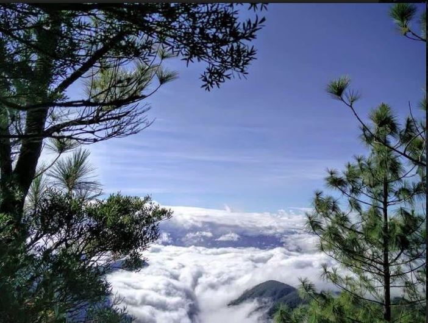

| |
Welcome to City of Nueva Ecija |

|
Aloha Falls is one of the remotest tourist destinations in Nueva Ecija.
It is an ideal attraction for extreme hikers/adventurers tucked deep in the mountains.
It measures around 20 meters high with a beautiful catch basin.
Lush forests surround the waterfall. Hikers who climb Mount 387 usually make a side trip here.
Location/Jump-off: Carranglan Trekking Time: 4-5 hours |
| Dupina River is a must-see for those into rustic destinations.
The river originates from the forested mountains of the Sierra Madre.
Aside from swimming or boating, you can try fishing in its rich waters.
There are nipa huts where you can spend the night.
If you’re into diving or jumping, there are big boulders that can serve as your platform.
Location/Jump-off: Gabaldon Rent for Wooden Cottages: Php 300-Php 600 |

|
|
Gabaldon Falls is one of the popular Gabaldon, Nueva Ecija tourist spots.
A brook from the pristine rainforests upstream feeds the waterfall. Beautiful rock formations surround the place.
It has a beautifully carved pool with crystal-clear waters.
Locals claim that swimming here can rid you of certain illnesses such as cough and cold.
Location/Jump-off: Gabaldon Environmental Fee: Php 20 Guide Fee: Php 100 Trekking Time: 30-45 minutes |
|
Mount Kemalugong is one of the Laur, Nueva Ecija tourist spots. Standing at more than 1,740 meters above sea level,
Mt Kemalugong offers a spectacular view of the sea of clouds.
On its top, you’ll also catch sight of the surrounding mountain ranges, rivers, and plains of Nueva Ecija and adjacent provinces.
It is also known as Paasa Peak, the highest in the said province.
Location/Jump-off: Brgy. Siclung, Laur |
 |

|
Gapan Church also known as the National Shrine of Virgen La Divina Pastora,
Gapan Church is one of the historical tourist spots in Nueva Ecija.
Built in 1872, this Roman Catholic Church is one of the oldest Baroque churches in the country.
It is a favorite pilgrimage site for faithful Catholics.
Location/Jump-off: Gapan City |
|
The Camp Pangatian War Memorial Shrine is one of the best historical tourist spots in Nueva Ecija. It was an American Shrine but turned into a concentration camp during the Japanese invasion.
Today, it commemorates the heroism of both Filipino and American soldiers who fought the Japanese army during World War II.
Location/Jump-off: Cabanatuan City |
|
Pantabangan Lake the creation of the Pantabangan Dam led to the creation of the Pantabangan Lake, one of the largest in Southeast Asia.
It is also one of the cleanest lakes in the Philippines.
Sports fishing is a favorite activity here. The most common fishes caught are largemouth bass, a freshwater species.
You can also navigate the lake via a fishing boat and enjoy the rustic scenery.
Location/Jump-off: Pantabangan |
|
Pantabangan Dam, the second largest dam in Asia, is one of the major sources of energy in the entire province.
It is just five kilometers away from the highway.
To visit the dam, you need to present a valid ID. Rivers and brooks emanating from the distant mountains feed the dam
Location/Jump-off: Pantabangan |
| Minalungao National Park is one of the most frequented tourist spots in Nueva Ecija.
The Peñarada River which emanates from the mountains of the Sierra Madre flows through the park.
You can enjoy swimming or bamboo-rafting in its crystal-clear and cold waters.
Huge limestone rock formations and thick forests are added sights to see.
There is also a nearby cave where you can see stunning stalactite and stalagmite formations.
Location/Jump-off: Sitio Minalungao, Brgy. Pias, General Tinio Entrance Fee: Php 50 Raft Ride: 500 for a day, good for 10 persons Contact Person: Ms. Diana Rose Cunanao, Municipal Tourism Officer Contact Number: (6344) 958-2874 loc. 104 |
|
General Luna Falls is one of the most scenic waterfalls in Nueva Vizcaya, measuring more than a hundred feet high.
It is a multi-tier falls with pools on each cascade. It is a can-miss Nueva Ecija tourist spot, especially for avid nature lovers.
Location/Jump-off: Rizal |
| For Your Information |